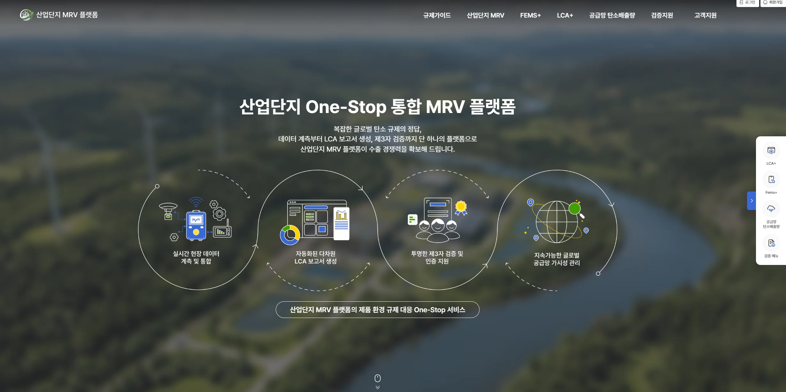
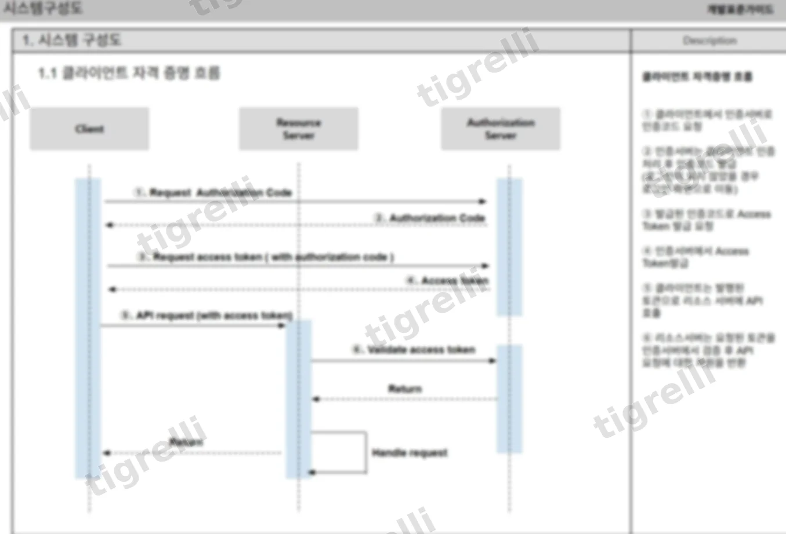
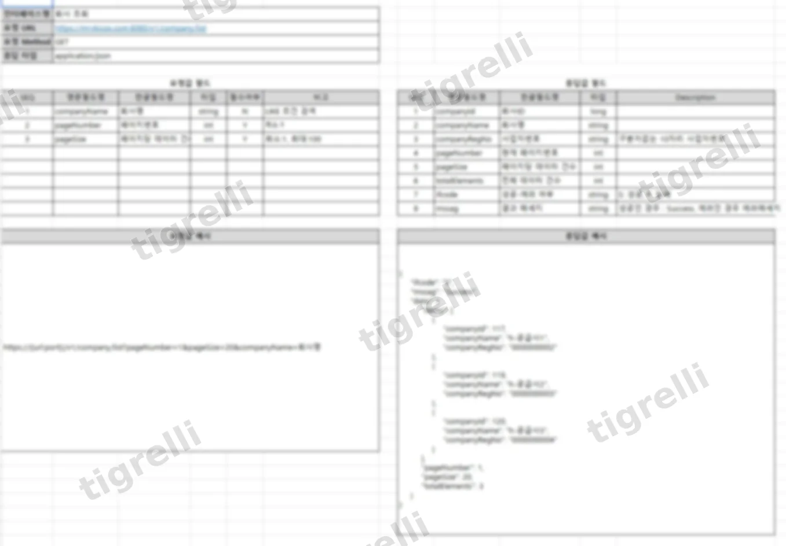
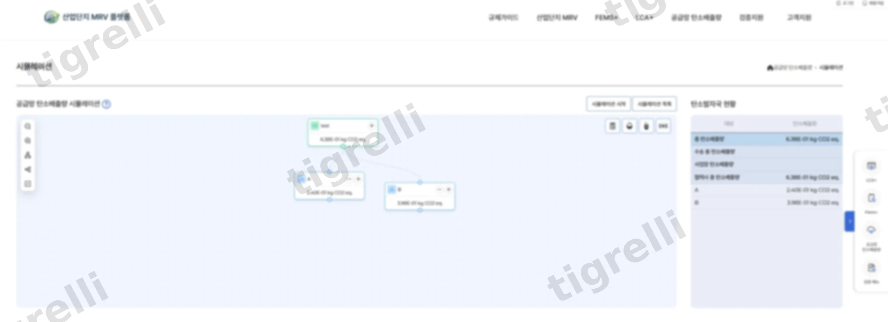

0→1 PM
산업단지 탄소중립 통합관제 플랫폼

개요
산업단지 입주기업을 대상으로 에너지 실시간 계측(FEMS+), LCA 기반 탄소배출량 산정(LCA+)을 지원하여 수요기업 신청을 통해 별도 시스템 구축 없이도 시스템을 이용할 수 있습니다.
* 현재 홈페이지 디자인은 리뉴얼 되었습니다.
기획
별도 시스템인 LCA와 FEM+ 연계를 고려한 시스템 아키텍처 방향을 제시하고 개발 PL과 함께 기술 스택을 조율했습니다.
정책 요구사항과 기술적 구현 가능성 사이에서 의사결정을 주도해 공공기관 대상 프로젝트를 이끌었습니다.
-
원스톱 통합 설계
데이터 계측 → LCA 보고서 생성 → 제3자 검증까지 전 과정을 하나의 플랫폼에 담아, 기업이 여러 시스템·기관을 개별적으로 거치지 않고 한 곳에서 규제 대응을 끝낼 수 있도록 설계했습니다.
-
실측 데이터 기반 신뢰성 확보
FEMS+(에너지관리시스템)의 실시간 계측 데이터를 LCA+(탄소관리시스템)의 산정 로직에 직접 연동시켜, 수기 입력이나 추정치가 아닌 실측 데이터를 기반으로 배출량을 산정하도록 했습니다. 규제·수출 대응에 필요한 데이터 신뢰성을 근본적으로 확보하려는 의도입니다.
디자인 · 개발



결과 · 회고
이번 프로젝트에서 가장 부딪혔던 부분은 컨소시엄을 이루는 여러 담당자들과의 조율이었습니다. 컨소시엄은 하나의 목표를 향해 움직이는 것 같아도,
각 회사마다 우선순위와 일정 감각이 달랐습니다. 전체 프로젝트 타임라인을 맞추려면 각 담당자의 입장을 하나씩 확인하고 조정하는 과정이 필요했습니다.
컨소시엄 프로젝트는 내부 일정 관리만큼이나, 외부 이해관계자로부터 필요한 것을 제때 받아내는 능력이 중요하다는 것을 배웠습니다.
실질적으로 집중해서 담당한 부분은 서로 다른 시스템인 FEMS+와 LCA+ 데이터를 연계하기 위한 LCA 연계 프로세스와 API 설계였습니다.
개발 PL과 함께 각 시스템에서 어떤 데이터를 어떤 형식으로 주고받아야 LCA 산정에 문제가 없을지 하나씩 맞춰가며 설계했고, 이 부분은 컨소시엄 조율의 어려움과는 별개로 명확한 성과로 남았습니다.
다양한 변수 속에서도 프로젝트를 기한 내에 1차 완료하고 외부 시연까지 성공적으로 마칠 수 있었습니다. 이번 컨소시엄 프로젝트는 기술 설계만큼이나 사람과 일정을 조율하는 역량이 결과를 좌우한다는 것을 깨닫게 해 준 소중한 경험이었습니다.